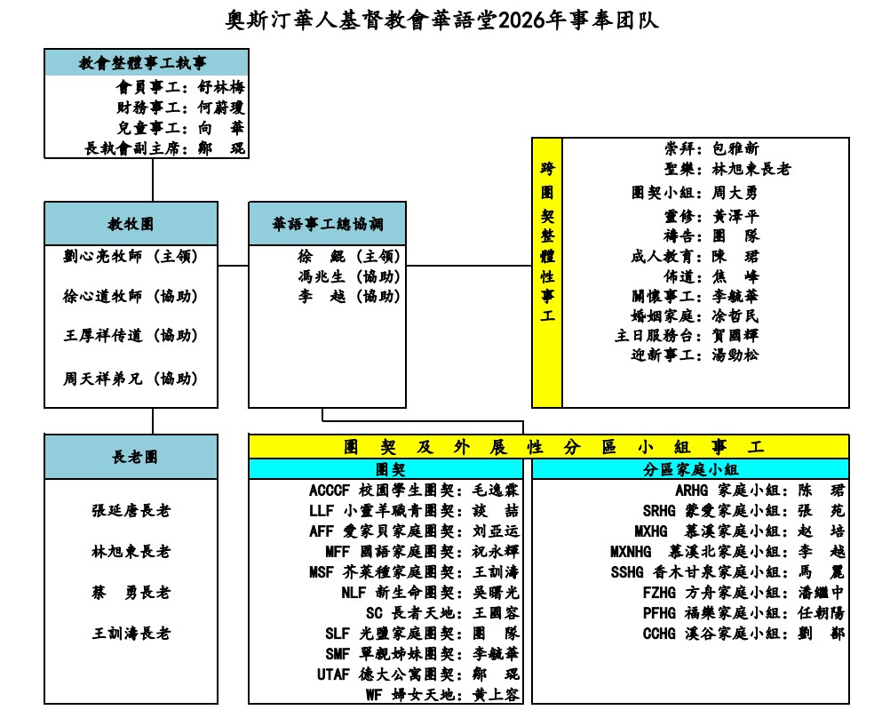

奧斯汀華人教會華語堂牧者
按相片可看簡介
關閉視窗
劉心亮牧師
劉心亮牧師生長於中國河南，年少時曾歷經輟學與礦井生活的艱辛。在人生低谷中蒙主揀選，經歷浪子回頭的恩典，在基督裡找到生命的方向與意義。信主後，
他重返校園，先後於江西財經大學取得經濟學學士與管理學碩士學位。畢業後在江鈴汽車財務部任職，從事會計與內部審計工作。於 2006 年回應神的呼召，
與妻子一同赴美，在西北浸信會神學院接受神學裝備，獲道學碩士學位。2010 年起，劉牧師在加拿大全職牧養愛城華人基督教福音堂近十三年。
牧會期間持續深造，於 2023 年取得富勒神學院教牧學博士學位。同年，在神的帶領下，全家遷至德州奧斯汀，加入奧斯汀華人教會，擔任華語堂牧師至今。
劉牧師與 妻子章蕾育有一子一女，兒子劉明德、女兒劉明玉。
Rev. Michael Liu was born and raised in Henan China. During his teenage years, he dropped out of school and
wandered through the countryside, eventually working in a mine. During those rebellion years, however, the
prodigal son was saved by Christ and found his life purpose and meaning in God! Later, he returned back to
campus by God’s grace and was able to accomplish his bachelor’s(2001) and master’s degrees (2006) in Jiangxi
University of Finance & Economics. By answering God's calling in 2006, he and his wife Ruth went to the
United States to study for a Master of Divinity at Northwest Baptist Seminary. After graduating from seminary,
he moved to Canada in 2010 and served at Edmonton Chinese Christian Church for twelve and a half years.
During his pastoral ministry, he continued to pursue further studies and will graduate with a Doctor of Ministry
degree from Fuller Theological Seminary in 2023. Guided by God, in 2023, he joined Austin Chinese Church
to pastor the Mandarin congregation. Michael and Ruth are blessed with two children, Joseph and Jenna.
關閉視窗
徐心道牧師
徐心道牧師 1983 年從臺灣來 Iowa 讀企管碩士時信主，1984 年與妻子方靜琦一起受洗。1986 年兩人在北加州取得電腦碩士後，遷至洛杉磯，都在 Unisys 擔任軟體系統工程師， 並在剛植的聖迦谷羅省基督教會參與事奉。
1990 年底加入十七人的團隊到洛杉磯東區植堂，成立生命泉基督教會。 同時接受全職事奉呼召，1994 年富勒神學院畢業。 1997 起在紐約州大學城旖色佳牧養華人教會十六年半，力求栽培學生及學者成為神國工人。
2000 年帶領教會成立英文堂後，兼任英文堂牧師八年。 全職牧會期間，他兼任康乃爾大學校牧， 並持續進修，2008 年三一神學院教牧學博士畢業。 2013 年用約一年時間將大學城事奉交棒后，蒙神引導來到奧斯汀擔任本教會華語部主領牧師，
並在其中幾年被徵召兼任全教會協調牧師。2020 年教會決定嘗試多堂區模式後，他被徵召在繼續帶領華語堂的同時也帶領西南堂區的籌備、2021 的建立、以及後續的成長發展。
在 2024 已達退休年齡時，他決定用三年時間安排交棒，先於 2024 起不再擔任協調牧師，2025 年把主堂區華語堂主領牧師職分交棒，目前較專注於西南堂區的交棒安排。
除了有兩個已成年的女兒外，他們夫婦還有一個小外孫及一個小外孫女。
Rev. Tony Hsu came to the US from Taiwan in 1983 for his MBA study. He and his wife Jenny soon accepted Christ and got baptized together in 1984.
After getting their master degree in computer science they moved from Silicon Valley to Los Angeles in 1986 to work for Unisys as Software Engineers,
and they joined a newly planted church FEC-SGV. Four years later they joined a team of 17 people to plant another church RLCC in the east side of Los Angeles County.
At the same time God called them to full-time ministry, and Tony completed his M.Div. studies at Fuller Theological Seminary in 1994. From 1997 to 2013 he served in Ithaca, NY,
the college town of Cornell University, focusing on students and scholars ministry. After leading the church to start English worship service in 2000,
he served as both Chinese Pastor and English Pastor for 8 years. While pastoring the church full time, he also served as Cornell University chaplain,
and he continued to equip himself by completing Doctor of Ministry study at Trinity Evangelical Divinity in 5 years (2003 to 2008).
After using almost one full year to pass the college town ministry baton in 2013, God led him to serve as our Mandarin Lead Pastor. In multiple years since he joined ACC,
he was asked to serve ACC's Coordinating Pastor. When ACC decided in 2020 to try multi-campus model, he was recruited to lead the planning,
the establishment of ACC-SW Campus in 2021, and its subsequent growth and development, while still serving as the Main Campus Mandarin Lead Pastor.
As he reached retirement age in 2024, he decided to use the next three years to pass the baton. That includes no longer serving as the Coordinating Pastor after 2023,
and passing the baton of Main Campus Mandarin Lead Pastor in 2025. Now he focuses more on making a good succession plan for ACC-SW Campus.
In addition to two grownup daughters, Lydia and Tina, he and Jenny also have one grandson and one granddaughter.
關閉視窗
周天祥傳道
周天祥傳道 出生於中國上海，成长于基督徒家庭。2012 年大學畢業後，順服神的呼召，前往中亞參與跨文化宣教事工。在宣教工場上親身經歷主的保守與信實，生命也因此被進一
步更新與建造。2015 年回到國內後，繼續在宣教事工中全職服事，參與宣教培訓、關懷以及宣教拓展工作，並在家庭教會中擔任主要同工，致力於教會牧養和門訓。2021 年，
周傳道與妻子張雅靜姊妹一同回應主的呼召，前往美國德州，進入西南浸信會神學院就讀，並於 2025 年 5 月畢業，獲道學碩士學位。蒙神帶領，同年 6 月來到奧斯汀華人教會任實習傳道。
周傳道與妻子張雅靜姊妹願在主裡同心合一，為福音與神國的拓展繼續擺上。
Mark Zhou was born in Shanghai, China, and grew up in a Christian family. After graduating from universityin 2012,
in answering God’s calling, he went to Central Asia to engage in cross-cultural missions. On the mission field,
he personally experienced the Lord’s protection and faithfulness, and his life was further renewed and strengthened.
After returning to China in 2015, he continued to serve full-time in missions, participating in missionary training, member care,
and the expansion of mission efforts. He also served as a key co-worker in a house church, focusing on pastoral care and discipleship.
In 2021, Mark and his wife, Yajing, responded to Lord’s call and moved to Texas to study at Southwestern Baptist Theological Seminary.
He graduated in May 2025 with a Master of Divinity degree. By God’s guidance, he joined Austin Chinese Church as a ministry apprentice in June.
Mark and Yajing and are committed to serving together in unity for the advancement of the gospel and the expansion of God’s kingdom.